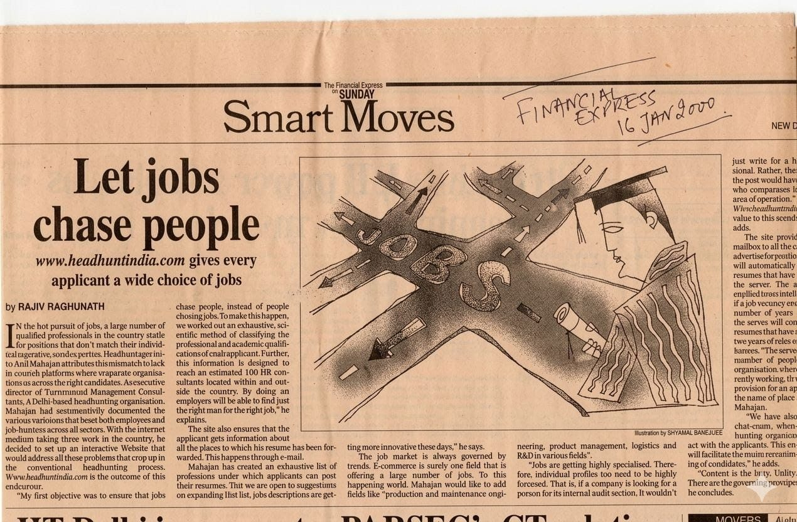

The Financial Express on Sunday, 16 January 2000 — "Let Jobs Chase People" · Smart Moves section · Interview by Rajiv Raghunath
Publication Details
A Different Question
In January 2000, recruitment in India depended on newspaper advertisements, fax machines and manually maintained databases. Hiring was reactive — companies advertised, candidates applied, recruiters screened hundreds of résumés.
The industry's question was: "How do we receive more résumés?"
Anil Mahajane asked something entirely different: "How do we organise professional knowledge so intelligently that the right opportunities discover the right leaders?"
This was not a slogan. It represented a complete reversal of conventional recruitment thinking — and it led to the creation of HeadHuntIndia.com, one of India's earliest technology-enabled executive search platforms.
A Vision Far Beyond Online Recruitment
Most early recruitment websites merely digitised newspaper classifieds. HeadHuntIndia.com was conceived differently — not to collect résumés, but to transform fragmented professional information into structured leadership intelligence.
The platform proposed:
- Systematic classification of professional expertise by function, qualification and industry
- Intelligent candidate discovery and structured matching
- Automated screening based on predefined hiring parameters
- Candidate confidentiality and controlled visibility
- Digital recruiter collaboration and transparent communication
The interview also described automated filtering by years of experience, functional specialisation, industry expertise and role suitability — using technology to improve efficiency while preserving human judgement. Simple by today's standards, but an early articulation of algorithmic recruitment logic.
Ahead of Its Time
This interview was published three years before LinkedIn launched, nearly two decades before AI-powered recruitment became mainstream, and long before Talent Intelligence Platforms, Skills Graphs and Predictive Hiring became industry vocabulary.
The ideas it articulated — structured professional data, intelligent matching, passive talent discovery, automated screening, candidate privacy — have since become foundational to modern recruitment technology.
Viewed in hindsight, this interview represents one of India's earliest media discussions on technology-enabled executive search, digital recruitment and talent intelligence — captured in a mainstream national publication at the dawn of the internet era.
A Belief That Still Defines Our Practice
At its heart, this interview was not about a website. It was about a philosophy: executive search should not merely collect résumés. It should organise knowledge, identify leadership potential and intelligently connect exceptional people with exceptional opportunities.
That belief continues to shape the philosophy of CSuite Talent Management Consulting today.